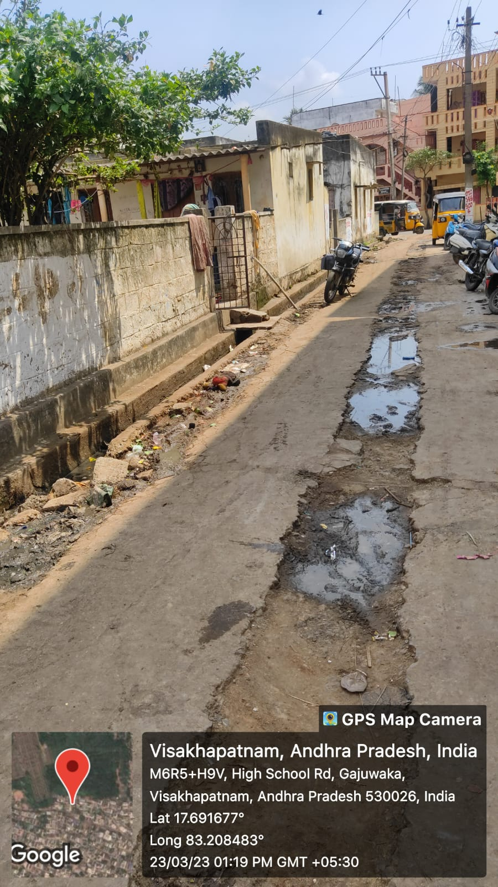

Gajuwaka

Gajuwaka is a slum area located in the city of Visakhapatnam under the jurisdiction of GVMC (Greater Visakhapatnam Municipal Corporation). The slum area is home to around 10,000 residents and faces several challenges that impact the well-being of its residents.Efforts to improve the living conditions in Gajuwaka slum have been made by various NGOs and community organizations. These include initiatives to provide basic amenities like toilets and clean drinking water, educational programs for children and women, and income-generating activities to promote entrepreneurship and self-sufficiency. However, much more needs to be done to address the complex challenges faced by residents and promote sustainable development in the slum area.
Major Problems
- Limited educational opportunities: Many children in the slum area do not attend school due to poverty and lack of resources. This can perpetuate the cycle of poverty and limit their future prospects.
- Unemployment: Many residents in Gajuwaka are daily wage workers who rely on casual labour for their livelihood. With the ongoing COVID-19 pandemic and the resulting economic slowdown, many have lost their jobs and are struggling to make ends meet.
- Inadequate sanitation: Lack of proper sanitation facilities and waste management infrastructure is a significant issue in the slum area. Open defecation is common, and garbage is often piled up on the streets, leading to unhygienic conditions and potential health hazards.